MOE provides functionality to import and export data to and from molecular databases. The MDB format is MOE's native database format; this is the format recognized by the MOE Database Viewer. Database files of other formats, e.g. SD, RG, Tripos, Maestro or PDB, must first be converted to MDB format using the Database Import panel in order to be viewed in MOE.
The Database Import panel can be invoked from either the Open panel () or the File menu in the Database Viewer ().
From the Open panel, select the files to import. The files must all be of the same format. If multiple files of different types are selected, there will be no available import operation. Choose the Import button under Operations. The Database Import panel will open with the selected files already loaded.
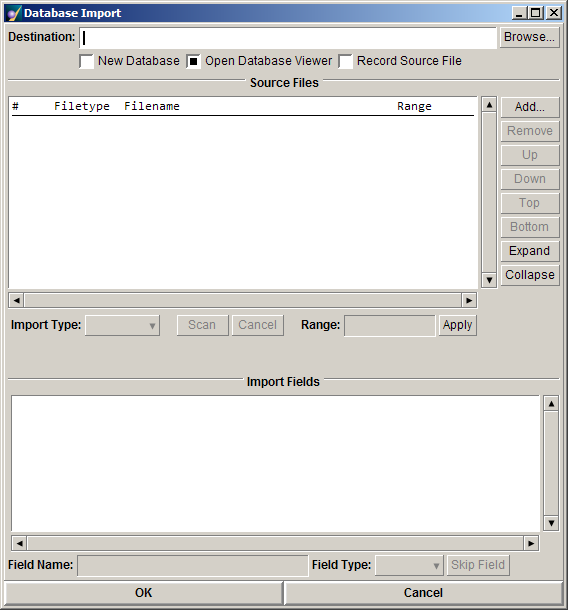
Files of the following formats can be imported:
Files of unknown type (i.e. not in the above list) will be imported as raw ASCII data, on a line per line basis.
Note: Database formats vary in the kind of information they can store. Care must therefore be exercised to avoid data loss when converting between formats.
The Database Import panel is divided into three sections. The first defines the destination database to which all imported data will be written. The next lists the files to be imported (the source files), and the last lists the fields chosen for import from those files.
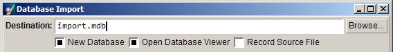
The destination database is specified by either entering a name directly in the Destination text field or pressing Browse to open a file selection box.
The following options are available:
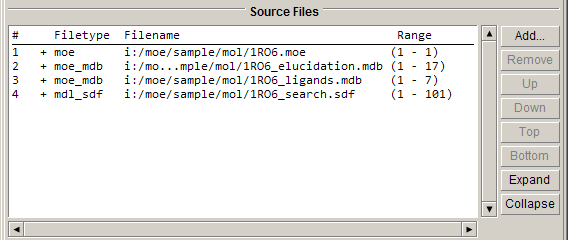
The Source Files section of the import panel allows you to specify which files are to be imported and in what order. The order in which the files appear in the list is the order in which they will be imported. To add a file, use the Add... button. To remove one or more files, first select the files in the list then press the Remove button. To reorder the files in the list, use the Up, Down, Top, and Bottom buttons to move the files up one, down one, to the top or to the bottom of the list, respectively.
Each of the files in the source list is assigned a number based on its position in the list. These numbers appear in the Source Files list under the heading #. The numbers are used in the Import Fields list to indicate the files in which that field occurs.
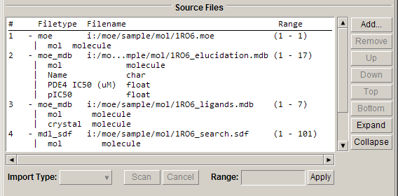
Each source file may be displayed in an expanded view, where the field names and types contained in that file are shown. This state can be toggled either by double-clicking the source file in the list or by pressing the Expand or Collapse buttons to expand or collapse the view for the selected files.
When a source file is in its collapsed view state, a + preceding the Filetype will be displayed. In the expanded state, a - will be displayed, and the names and types of the fields contained in that file will be shown in lines immediately following, each prefixed with a |.
You can control how fields are to be named in the destination database and how they are to be interpreted by selecting them in the list and editing the Field Name and Field Type fields that will appear below the list. You can also specify that a field be skipped altogether by choosing Skip Import. For more details, please refer to Import Fields below.
For each source file, the name and format is shown in the Source Files list. The filename is the string that was entered from the Add... button or obtained from the invoking Open panel. Filenames are truncated in the display if they are overly long. The names of files that are recognized to be in GZIP compressed format are displayed differently from those of other files. GZIP compressed files will be first automatically decompressed in order to determine their contents. In the Source Files list, the root filename will appear prefixed by the word gunzip: to indicate that the decompressed file will exist only temporarily on the system, for the duration of the import.
If a file was not recognized to be of a given type, you can force its type by using the Import Type option menu. All recognized file types are listed in this menu.
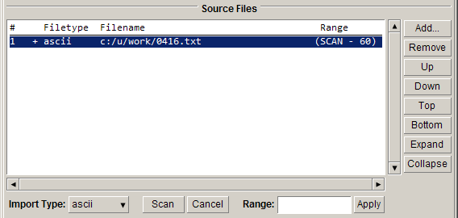
Source files can be re-read for their field name and type content by selecting them and then pressing Scan. When files are initially added to the source list, they are scanned for only a limited period of time. Therefore the initial scan may not determine all of the actual fields contained in the file. In such a case, re-scanning the file may be desirable.
When a file is scanned, data is read from the file for the purpose of determining the field names and types contained in the file. Some file formats allow for additional or new fields to appear anywhere in the file; in this case they may not be discovered until the entire file has been scanned. For sizable files, this scanning process may take some time. Please note that there is no time limit imposed on the Scan operation -- there will be no timeout to stop the scanning process. Press Cancel to manually terminate scanning.
While a file in the source list is being re-scanned, the Range column in the Source Files list will display the word SCAN in the first position to indicate that scanning is taking place. If you are satisfied that no new fields will be discovered during re-scanning, press Cancel.
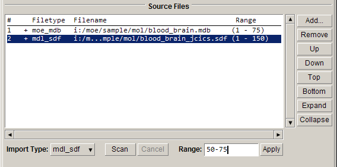
For each source file, you can specify a range of entries to import. The default is all entries in the file.
Select the desired files in the source list and then enter the range of entries in the Range text field. The range is specified as , inclusive. Press Enter or Apply to put the range into effect; it will appear in the Source Files list. Clear the text field to import all entries.
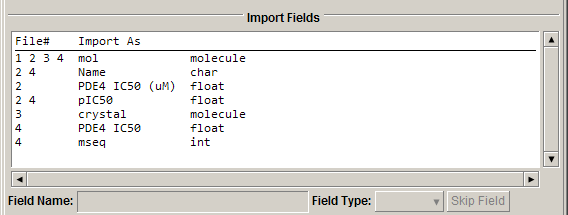
The Import Fields list gives the structure of the destination database. The field names and types listed here will appear in the database when the import is complete.
Each entry in the list shows, for a given field, the source list file numbers of each file in which the field is found, the name of the field as it will appear in the destination database, and the field type. Both the field names and types may be modified by selecting fields in the list and making the modifications in the controls found below the list.
A field may be entirely omitted from import by selecting it and pressing the SKIP button. Pressing this button will result in each field skipped being highlighted and shown in expanded view in the Source Files list. Skipped fields are eliminated from the Import Fields list. To recover a skipped field, select it from the Source Files list and turn off Skip Import.
Double-clicking on a field in the Import Fields list will cause the Source Files list to expand the view of every source file containing that field.
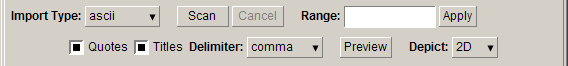
The delimited ASCII format provides the only true cross-platform method of exchanging data, and is supported by most database packages. A delimited ASCII format data file is a text file containing data arranged in a table. The first line in the file may optionally contain the names (field titles) of the data fields in the file. The data table is arranged so that each field is a column in the file; i.e. each line (row) in the file contains a data value for every data field. Data values in a given row are delimited from each other by a separator character, for example, a comma. If the data values themselves contain the separator character, they must be additionally delimited. In MOE, double quotes (") are used for this purpose.
The following is an example of data in an ASCII database:
"Name", "Age", "Height"
"John", 41, 178.5
"Jeffrey", 37, 194
"George", 26, 172.3
"Joseph", 32, 181.6
This database is comma-delimited with quoted fields. The first line of the database contains the field names. Quotes are not necessary in this example, but would have been had one of the names contained a comma (ex: "Smith, John").
When importing from an ASCII file into a MOE database, you must ensure that the import data type of each field to be imported is correct. MOE performs automatic ASCII data type detection, however, these types may need to be adjusted. Note that 'double' and 'byte' types are not recognized.
If every entry in a field is recognized by sm_BuildSyntax as a valid SMILES string then the field will be imported as 'molecule' type, in which case a 3D molecule will be written. If any entries fail this test then the entire field will be assumed to contain raw character data.
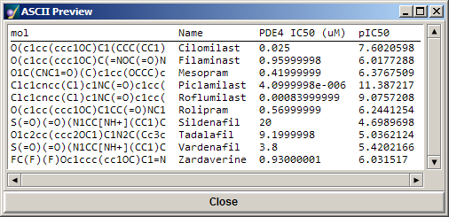
To help you decide what is the proper data type for a given field in the ASCII file, the Import ASCII Files panel has a Preview button which shows how the first few entries of the ASCII database will be imported based on the current settings. The preview updates automatically as settings are changed in the panel.
You can modify the following ASCII specific options:
Note: It is important to specify settings which match the contents of the file.
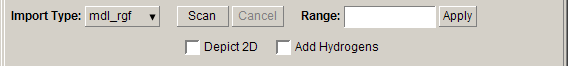
Files of type RG contain a single molecule per entry. The molecular data may be imported to any molecule field in an MDB by changing the default field name. You can modify the following RG specific import options:
Start by either opening or creating a database in the Database Viewer. To export data, choose . The following panel appears:
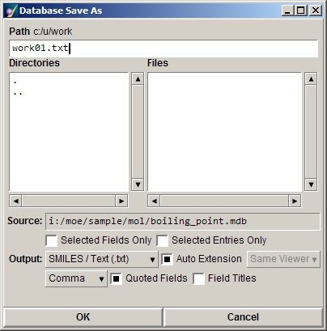
Note: Since SD files allow only one molecule field, the first molecule field encountered in the database will be exported and all subsequent molecule fields will not be exported. The name of the exported molecule field is not saved in the SD file format.
Note that field type information is not preserved. Thus, when reading in an SD database, field types must be verified manually in the import panel.
Note: Delimited ASCII format does not support molecule fields. As a result, molecule fields are exported as SMILES strings. Character fields will be truncated at the first end of line character or the first delimiter, whichever comes first.
Note: Since MOL2 files allow only one molecule field, the first molecule field encountered in the database will be exported and all subsequent molecule fields will not be exported. The name of the exported molecule field is not saved in the MOL2 file format. Non-molecule fields will not be exported.
Note: Since MacroModel files allow only one molecule field, the first molecule field encountered in the database will be exported and all subsequent molecule fields will not be exported. The name of the exported molecule field is not saved in the MacroModel file format. Non-molecule fields will not be exported.
The merge operation involves four steps, each of which is depicted in a panel used by the Merge Databases wizard:
| Step 1 | Database Selection panel | Specifies which database files to use. |
| Step 2 | Key Field Specification panel | Defines the relationship between the databases. |
| Step 3 | Field Selection panel | Specifies what fields to merge. |
| Step 4 | Merging Options panel | Specifies what types of entries to merge. |
You can enter the paths and names of the databases in the text fields or use the Browse buttons to select the desired files.
If the Open Database Viewer option is selected, MOE will open the output database in a Database Viewer allowing you to observe the progression of the merge operation.
Press Next to proceed to the next step.
A key field is a database field which contains data that can be used as identifiers for entries in the database. SMILES strings are used as identifiers for molecule field data. The merge operation considers two entries related if and only if the values in all their key fields match. Ideally, key fields should contain unique data (i.e. no duplicate values, so that each entry has a unique identity). However, as this is fairly uncommon, up to three key fields can be specified per database. Although not all three keys need to be defined, it is necessary to define at least one pair of key fields for the two databases. Undefined means that the key will not be used.
During the merge, MOE compares data in key1 field of database 1 with data in key1 field of database 2. Make sure that each pair of key fields are of the same date type. For example, you cannot compare data in a molecule field with data in a character field.
If more than one entry in a database share key field values with one or more entries in the second database, then the result of merging these entries will be the Cartesian product of all these entries. That is, if two entries in database 1 share the same key field values with three entries in Database 2, then 2 × 3 entries will be created.
The Use Selected Entries Only option only applies to databases currently open in a Database Viewer. In this case, the merge operation will only consider entries that are selected in the database. If you intend on performing a merge operation using selected entries in databases, open both databases in Database Viewers and select the entries before starting the merge. If this option is on but no entries are selected, MOE will display an error message. At this point, you can return to previous steps, select entries and complete the merge successfully.
Note: If you specified an Output Database in the Database Selection page (i.e. the output is neither Input Database 1 nor Input Database 2), the merge operation will only create key fields of Database 1 in the output database.
When you are done, press Next to proceed to the next step or Previous to return to the prior step.
Selected fields will be created in the output database. If two fields have the same name, they will be prefixed by the name of their parent database.
Note: If the Output Database is one of the input databases, its fields will not appear since they already exist in the output database.
When you are done, press Next to proceed to the next stage or Previous to return to the prior step.
The fourth page of the Merge Databases wizard is Merging Options. This panel lets you control which entries will appear in the output database.
Shared entries are entries that have the same values in key fields of both databases. In other words, they are common in both databases and "share" the same values in all the key fields.
Unshared entries are entries whose key field values are not found in the other database. In other words, unshared entries have unique key fields values.
| Import shared entries: | Imports entries that are shared by both input databases. This is the intersection of the databases. |
| Import unshared entries of database 1: | Imports entries that are unique to input database 1. This is the difference between database 1 and database 2. |
| Import unshared entries of database 2: | Imports entries that are unique to input database 2. This is the difference between database 2 and database 1. |
Note: Selecting all three options is equivalent to the union of database 1 and database 2.
Press Merge. A status report indicates the progress of the merge operation.
For each input database, the status report gives the tally of entries to process, entries processed to date, duplicate entries, and unshared entries. Duplicate entries are entries that have the same key field value. If three entries have the same key field value, there will be the original entry plus two duplicate entries.
Database Viewer
Creating and Editing a Database